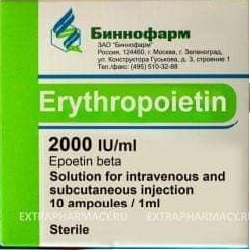

Erythropoietin

ေက်ာက္ကပ္မွထုတ္ေသာ ေဟာ္မုန္းတစ္မ်ိဳးျဖစ္ပါတယ္။ ရိုးတြင္းခ်ဥ္ဆီမွေသြးနီဥထုတ္ျခင္းကိုအားေပးပါတယ္။
ေဆးအေနႏွင့္ထုတ္လုပ္အသံုးျပဳႏိုင္ပါတယ္။ ထိုးေဆးအေနႏွင့္ထုတ္လုပ္အသံုးျပဳထားေသာေဆးမ်ားရိွပါတယ္။ (Procrit injection)
ဘယ္မွာသံုးလဲ?
ေသြးအားနည္းေရာဂာ
အထူးသျဖင့္
- –ေက်ာက္ကပ္ဆိုင္ရာနာတာရွည္ျဖစ္ေနသူမ်ား
- HIVပိုးအတြက္ေဆးေသာက္ေနရသူမ်ား
- ကင္ဆာေဆးသြင္းေနရသူမ်ား
- –ေသြးက်ဲေဆးမ်ားေသာက္ေနရသူမ်ားခဲြစိတ္ကုသမႈတစ္ခုခုျပဳလုပ္ရန္လိုအပ္ေသာအခါတြင္ သြးသြင္းရျခင္းကိုေလ်ာ့ခ်ေစႏိုင္ရန္ မခဲြစိတ္မီႀကိဳေပးေလ့ရိွပါတယ္။
- အေၾကာေဆးအေနႏွင့္လည္းေကာင္း၊အေရျပားေအာက္ထိုးသြင္းၿပီးေသာ္လည္းေကာင္းသံုးႏိုင္ပါတယ္။
- ဆရာဝန္ညႊန္ၾကားခ်က္ႏွင့္သာသံုးႏိုင္ပါတယ္။
ဘယ္လိုသံုးရမလဲ?
- မ်ားေသာအားျဖင့္ တစ္ပတ္လ်က္ ၁ႀကိမ္မွ၃ႀကိမ္အထိသံုးႏိုင္ပါတယ္။
- –ေဆးပုလင္းကိုမလႈပ္ရပါ။ေဆူထိုးသည့္ေနရာကိုေျပာင္းလဲထိုးေပးျခင္းျဖင့္ ခဏခဏအသံုးျပဳရသူမ်ညးတြင္ နာက်င္မႈသက္သာေစႏိုင္ပါတယ္။
- –ေသြူနီဥအေရအတြက္တိုးပြားလာရန္အခ်ိန္ ၂ပတ္မွ၆ပတ္ထိယူရပါတယ္။
- အေျခအေနတိုးတက္မႈႏွင့္ေဆးထိေရာက္မႈကိုစစ္ေဆးရန္ေသြးစစ္မႈမ်ညးျပဳလုပ္ရပါတယ္။
ေဘးထြက္ဆိုးက်ိဳးဘာေတြရွိလဲ?
- –ေဆးထိုးသည့္ေနရာကနာက်င္ျခင္း
- –ေခါင္းကိုက္ျခင္း
- ကိုယ္ခႏၶာနာက်င္ျခင္း
- –ေခ်ာင္းဆိုးျခင္း စတာေတြခံစားရနိုင္ပါတယ္။
ေအာက္ပါတို႔ေတြ႕ရိွလ်င္ဆရာဝန္ႏွင့္အျမန္ျပသရန္လိုအပ္ပါတယ္။
- –ေသြးတိုးျခင္း
(ေသြးနီဥမ်ားအေရအတြက္လ်င္ျမန္စြာတိုးပြားလာျခင္းေၾကာင့္ျဖစ္ႏိုင္ပါတယ္။)ေသြးေပါင္ခ်ိန္ကိုပံုမွန္တိုင္းေပးျခင္း၊ေသြးနီဥအေရအတြက္စစ္ေေဆးျခင္းမ်ားျဖင့္သိနိုင္သည္။
- ပဋိဇီဝပစၥည္းမ်ားထြက္လာျခင္းေၾကာင့္ သြးအားနည္းျခင္းပိုမိုဆိုးရြားလာျခင္း
(အသံုးျပဳမႈၾကာလာလ်င္ေတြ႕ရတတ္ပါတယ္။)
- အျဖစ္နည္းေသာ္လည္းအသက္အႏၱရာယ္ထိခိုက္ႏိုင္သည့္ေသြးခဲလြယ္ျခင္းကိုလည္းဂရုစိုက္ေစာင့္ၾကည့္ရမည္။
- –ေဆးဓာတ္မတည့္ျခင္း(ယားယံျခင္း၊ေရာင္ရမ္းျခင္း၊အင္ျပင္ထျခင္း၊)
ဘာေတြသတိထားရမလဲ?
- မိမိအသံုးျပဳေနေသာေဆးမ်ားႏွင့္ခံစားေနရေသာေရာဂါမ်ားကိုဆရာဝန္ကိုေျပာျပထားပါ။
- မိမိသေဘာႏွင့္အသံုးျပဳေနလ်င္၁၄ရက္ထက္မၾကာရွည္ေစပါႏွင့္။ပံုမွန္မဟုတ္ေသာလကၡဏာတစ္ခုခုခံစားရပါကဆရာဝန္ႏွင့္တိုင္ပင္ပါ။
- ကိုယ္ဝန္ေဆာင္ႏွင့္ႏို႔တိုက္မိခင္မ်ားတြင္ဤေဆးအသံုးျပဳရန္အေၾကာင္းရင္းခိုင္လံုမွဆရာဝန္ညႊန္ၾကားသည့္အတိုင္းအသံုးျပဳပါ။
ေဆးအာနိသင္ဘယ္လိုရွိလဲ?
- မိမိအသံုးျပဳေနေသာေဆးမ်ားကိုဆရာဝန္ကိုေျပျပထားရပါမယ္္။
ေဆးေသာက္လြန္ရင္ဘာေတြျဖစ္မလဲ?
- ေဆးအရိွန္လြန္ၿပီးအသက္ရႈက်ပ္ျခင္း၊သတိေမ့ျခင္းတို႔ျဖစ္ပါကအေရးေပၚကုသမႈလိုပါတယ္။
- ေဆးမ်ားကိုဘယ္ေဆးမဆို ဆရာ၀န္ သို့မဟုတ္တတ္က်ြမ္းနားလည္တဲ့က်န္းမာေရး၀န္ထမ္းမ်ားရဲ့ညြွန္ႀကားမွုနဲ့သာတိတိက်က်ေသာက္သင့္ပါတယ္။
- မိမိသေဘာနဲ့ေဆးၿဖတ္ၿခင္းရပ္ၿခင္းမၿပဳလုပ္သင့္ပါ။
- ေဘးထြက္ဆိုးက်ိုးၿပင္းထန္စြာခံစားရပါကဆရာ၀န္နဲ့တိုင္ပင္ပါ။